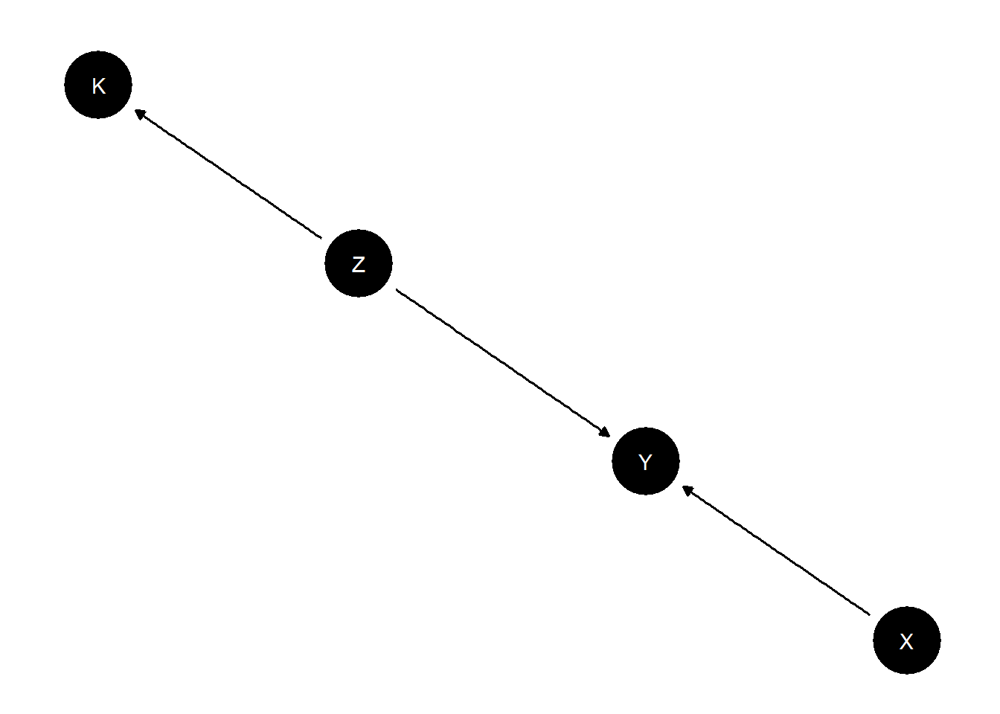

Chapter 11 External validity and inference aggregation
11.1 Transportation of findings across contexts
Say we study the effect of \(X\) on \(Y\) in case 0 (a country, for instance) and want to make inferences to case 1 (another country). Our problem however is that effects are heterogeneous and features that differ across units may be related both to treatment assignment, outcomes, and selection into the sample. This is the problem studied by Pearl and Bareinboim (2014). In particular Pearl and Bareinboim (2014) show for which nodes data is needed in order to “licence” external claims, given a model.
We illustrate with a simple model in which a confounder has a different distribution in a study site and a target site.
model <- make_model("Case -> W -> X -> Y <- W") |>
set_restrictions("W[Case = 1] < W[Case = 0]") |>
set_parameters(statement = "X[W=1]>X[W=0]", parameters = 1/2)|>
set_parameters(statement = complements("W", "X", "Y"), parameters = .17) |>
set_parameters(statement = decreasing("X", "Y"), parameters = 0)
plot(model)
We start by checking some basic quantities in the priors and the posteriors, we will then see how we do with data.
query_model(model,
queries = list(Incidence = "W==1",
ATE = "Y[X=1] - Y[X=0]",
CATE = "Y[X=1, W=1] - Y[X=0, W=1]"),
given = c("Case==0", "Case==1"),
using = c("priors", "parameters"), expand_grid = TRUE) |> kable()| model | query | given | using | case_level | mean | sd | cred.low.2.5% | cred.high.97.5% |
|---|---|---|---|---|---|---|---|---|
| model_1 | Incidence | Case==0 | priors | FALSE | 0.3321 | 0.2365 | 0.0130 | 0.8435 |
| model_1 | Incidence | Case==0 | parameters | FALSE | 0.3333 | 0.3333 | 0.3333 | |
| model_1 | Incidence | Case==1 | priors | FALSE | 0.6710 | 0.2344 | 0.1745 | 0.9868 |
| model_1 | Incidence | Case==1 | parameters | FALSE | 0.6667 | 0.6667 | 0.6667 | |
| model_1 | ATE | Case==0 | priors | FALSE | -0.0006 | 0.1401 | -0.2792 | 0.2771 |
| model_1 | ATE | Case==0 | parameters | FALSE | 0.3333 | 0.3333 | 0.3333 | |
| model_1 | ATE | Case==1 | priors | FALSE | -0.0024 | 0.1372 | -0.2725 | 0.2639 |
| model_1 | ATE | Case==1 | parameters | FALSE | 0.5727 | 0.5727 | 0.5727 | |
| model_1 | CATE | Case==0 | priors | FALSE | -0.0012 | 0.1689 | -0.3368 | 0.3329 |
| model_1 | CATE | Case==0 | parameters | FALSE | 0.8121 | 0.8121 | 0.8121 | |
| model_1 | CATE | Case==1 | priors | FALSE | -0.0012 | 0.1689 | -0.3368 | 0.3329 |
| model_1 | CATE | Case==1 | parameters | FALSE | 0.8121 | 0.8121 | 0.8121 |
We see that the incidence of \(W\) as well as the ATE of \(X\) on \(Y\) is larger in case 1 than in case 0 (in parameters, though not in priors). However the effect of \(X\) on \(Y\) conditional on \(W\) is the same in both places.
We now update the model using data on \(X\) and \(Y\) only from one case (case 1) and data on W from both and check inferences on the other.
The function make_data lets us generate data like this by specifying a multistage data strategy:
data <- make_data(model, n = 1000,
vars = list(c("Case", "W"), c("X", "Y")),
probs = c(1,1),
subsets = c(TRUE, "Case ==1"))
transport <- update_model(model, data)
query_model(transport,
queries = list(Incidence = "W==1",
ATE = "Y[X=1] - Y[X=0]",
CATE = "Y[X=1, W=1] - Y[X=0, W=1]"),
given = c("Case==0", "Case==1"),
using = c("posteriors", "parameters"), expand_grid = TRUE)| model | query | given | using | case_level | mean | sd | cred.low.2.5% | cred.high.97.5% |
|---|---|---|---|---|---|---|---|---|
| model_1 | Incidence | Case==0 | posteriors | FALSE | 0.3533 | 0.0067 | 0.3403 | 0.3665 |
| model_1 | Incidence | Case==0 | parameters | FALSE | 0.3333 | 0.3333 | 0.3333 | |
| model_1 | Incidence | Case==1 | posteriors | FALSE | 0.6747 | 0.0067 | 0.6614 | 0.6876 |
| model_1 | Incidence | Case==1 | parameters | FALSE | 0.6667 | 0.6667 | 0.6667 | |
| model_1 | ATE | Case==0 | posteriors | FALSE | 0.3574 | 0.0114 | 0.3352 | 0.3795 |
| model_1 | ATE | Case==0 | parameters | FALSE | 0.3333 | 0.3333 | 0.3333 | |
| model_1 | ATE | Case==1 | posteriors | FALSE | 0.5851 | 0.0090 | 0.5674 | 0.6026 |
| model_1 | ATE | Case==1 | parameters | FALSE | 0.5727 | 0.5727 | 0.5727 | |
| model_1 | CATE | Case==0 | posteriors | FALSE | 0.8156 | 0.0084 | 0.7988 | 0.8317 |
| model_1 | CATE | Case==0 | parameters | FALSE | 0.8121 | 0.8121 | 0.8121 | |
| model_1 | CATE | Case==1 | posteriors | FALSE | 0.8156 | 0.0084 | 0.7988 | 0.8317 |
| model_1 | CATE | Case==1 | parameters | FALSE | 0.8121 | 0.8121 | 0.8121 |
We do well in recovering the (different) effects both in the location we study and the one in which we do not. In essence querying the model for the out of sample case requests a type of post stratification. We get the right answer, though as always this depends on the model being correct.
Had we attempted to make the extrapolation without data on \(W\) in country 1 we would get it wrong. In that case however we would also report greater posterior variance. The posterior variance here captures the fact that we know things could be different in country 1, but we don’t know in what way they are different. Note that we get the CATE right since in the model this is assumed to be the same across cases.
| model | query | given | using | case_level | mean | sd | cred.low.2.5% | cred.high.97.5% |
|---|---|---|---|---|---|---|---|---|
| model_1 | Incidence | Case==0 | posteriors | FALSE | 0.3412 | 0.0066 | 0.3284 | 0.3543 |
| model_1 | Incidence | Case==0 | parameters | FALSE | 0.3333 | 0.3333 | 0.3333 | |
| model_1 | Incidence | Case==1 | posteriors | FALSE | 0.6673 | 0.0067 | 0.6543 | 0.6805 |
| model_1 | Incidence | Case==1 | parameters | FALSE | 0.6667 | 0.6667 | 0.6667 | |
| model_1 | ATE | Case==0 | posteriors | FALSE | 0.3203 | 0.0113 | 0.2980 | 0.3425 |
| model_1 | ATE | Case==0 | parameters | FALSE | 0.3333 | 0.3333 | 0.3333 | |
| model_1 | ATE | Case==1 | posteriors | FALSE | 0.5598 | 0.0091 | 0.5427 | 0.5780 |
| model_1 | ATE | Case==1 | parameters | FALSE | 0.5727 | 0.5727 | 0.5727 | |
| model_1 | CATE | Case==0 | posteriors | FALSE | 0.8042 | 0.0089 | 0.7864 | 0.8214 |
| model_1 | CATE | Case==0 | parameters | FALSE | 0.8121 | 0.8121 | 0.8121 | |
| model_1 | CATE | Case==1 | posteriors | FALSE | 0.8042 | 0.0089 | 0.7864 | 0.8214 |
| model_1 | CATE | Case==1 | parameters | FALSE | 0.8121 | 0.8121 | 0.8121 |
11.2 Combining observational and experimental data
An interesting weakness of experimental studies is that, by dealing so effectively with self selection into treatment, they limit our ability to learn about self selection. Often however we want to know what causal effects would be specifically for people that would take up a treatment in non experimental settings. This kind of problem is studied for example by Knox et al. (2019).
A causal model can encompass both experimental and observational data and let you answer this kind of question. To illustrate, imagine that node \(R\) indicates whether a unit was assigned to be randomly assigned to treatment assignment (\(X=Z\) if \(R=1\)) or took on its observational value (\(X=O\) if \(R=0\)). We assume the exclusion restriction that entering the experimental sample is not related to \(Y\) other than through assignment of \(X\).
model <- make_model("R -> X -> Y; O -> X <- Z; O <-> Y") |>
set_restrictions("(X[R=1, Z=0]!=0) | (X[R=1, Z=1]!=1) | (X[R=0, O=0]!=0) | (X[R=0, O=1]!=1)")
plot(model)The parameter matrix has just one type for \(X\) since \(X\) really operates here as a kind of switch, inheriting the value of \(Z\) or \(O\) depending on \(R\). Parameters allow for complete confounding between \(O\) and \(Y\) but \(Z\) and \(Y\) are unconfounded.
We imagine parameter values in which there is a true .2 effect of \(X\) on \(Y\). However the effect is positive (.6) for cases in which \(X=1\) under observational assignment but negative (-.2) for cases in which \(X=0\) under observational assignment.
model <- model |>
set_parameters(node = "Y", given = "O.0", parameters = c(.8, .2, 0, 0)) |>
set_parameters(node = "Y", given = "O.1", parameters = c( 0, 0, .6, .4))## Warning in make_par_values(model, alter = "param_value", x = parameters, : A specified condition matches multiple parameters. In these cases it is unclear which parameter value should be assigned to which parameter. Assignment thus defaults to the order in which parameters appear in 'parameters_df'.
##
## We advise checking that parameter assignment was carried out as you intended.## Warning in make_par_values(model, alter =
## "param_value", x = parameters, : You are altering
## parameters on confounded nodes. Alterations will be
## applied across all 'param_sets'. If this is not the
## alteration behavior you intended, try specifying the
## 'param_set' option to more clearly indicate parameters
## whose values you wish to alter.## Warning in make_par_values(model, alter = "param_value", x = parameters, : A specified condition matches multiple parameters. In these cases it is unclear which parameter value should be assigned to which parameter. Assignment thus defaults to the order in which parameters appear in 'parameters_df'.
##
## We advise checking that parameter assignment was carried out as you intended.## Warning in make_par_values(model, alter =
## "param_value", x = parameters, : You are altering
## parameters on confounded nodes. Alterations will be
## applied across all 'param_sets'. If this is not the
## alteration behavior you intended, try specifying the
## 'param_set' option to more clearly indicate parameters
## whose values you wish to alter.To parse this expression: we allow different parameter values for the four possible nodal types for \(Y\) when \(O=0\) and when \(O=1\). When \(O=0\) we have \((\lambda_{00} = .8, \lambda_{10} = .2, \lambda_{01} = 0, \lambda_{11} = 0)\) which implies a negative treatment effect and many \(Y=0\) observations. When \(O=1\) we have \((\lambda_{00} = 0, \lambda_{10} = 0, \lambda_{01} = .6, \lambda_{11} = .4)\) which implies a positive treatment effect and many \(Y=1\) observations.
The estimands:
| model | query | given | using | case_level | mean | sd | cred.low.2.5% | cred.high.97.5% |
|---|---|---|---|---|---|---|---|---|
| model_1 | ATE | - | parameters | FALSE | 0.2 | 0.2 | 0.2 | |
| model_1 | ATE | R==0 | parameters | FALSE | 0.2 | 0.2 | 0.2 | |
| model_1 | ATE | R==1 | parameters | FALSE | 0.2 | 0.2 | 0.2 |
The priors:
| model | query | given | using | case_level | mean | sd | cred.low.2.5% | cred.high.97.5% |
|---|---|---|---|---|---|---|---|---|
| model_1 | ATE | - | priors | FALSE | 0.003 | 0.2579 | -0.5155 | 0.5266 |
| model_1 | ATE | R==0 | priors | FALSE | 0.003 | 0.2579 | -0.5155 | 0.5266 |
| model_1 | ATE | R==1 | priors | FALSE | 0.003 | 0.2579 | -0.5155 | 0.5266 |
Data:
The true effect is .2 but naive analysis on the observational data would yield a strongly upwardly biased estimate.
| Estimate | Std. Error | t value | Pr(>|t|) | CI Lower | CI Upper | DF | |
|---|---|---|---|---|---|---|---|
| X | 0.808 | 0.029 | 27.57 | 0 | 0.75 | 0.865 | 181 |
The CausalQueries estimates are:
| model | query | given | using | case_level | mean | sd | cred.low.2.5% | cred.high.97.5% |
|---|---|---|---|---|---|---|---|---|
| model_1 | ATE | - | posteriors | FALSE | 0.2062 | 0.0299 | 0.148 | 0.265 |
| model_1 | ATE | R==0 | posteriors | FALSE | 0.2062 | 0.0299 | 0.148 | 0.265 |
| model_1 | ATE | R==1 | posteriors | FALSE | 0.2062 | 0.0299 | 0.148 | 0.265 |
Much better.
This model used both the experimental and the observational data. It is interesting to ask whether the observational data improved the estimates from the experimental data or did everything depend on the experimental data?
To see, lets do updating using experimental data only:
| model | query | given | using | case_level | mean | sd | cred.low.2.5% | cred.high.97.5% |
|---|---|---|---|---|---|---|---|---|
| model_1 | ATE | - | posteriors | FALSE | 0.1977 | 0.0359 | 0.126 | 0.2676 |
| model_1 | ATE | R==0 | posteriors | FALSE | 0.1977 | 0.0359 | 0.126 | 0.2676 |
| model_1 | ATE | R==1 | posteriors | FALSE | 0.1977 | 0.0359 | 0.126 | 0.2676 |
In this case we get a tightening of posterior variance and a more accurate result when we use the observational data but the gains are relatively small. They would be smaller still if we had more data, in which case inferences from the experimental data would be more accurate still.
In both cases the estimates for the average effect in the randomized and the observationally assigned group are the same. This is how it should be since these are, afterall, randomly assigned into these groups.
Heterogeneity in this model lies between those that are in treatment and those that are in control in the observational sample. We learn nothing about this heterogeneity from the experimental data alone but we learn a lot from the mixed model, picking up the strong self selection into treatment in the observational group:
| model | query | given | using | case_level | mean | sd | cred.low.2.5% | cred.high.97.5% |
|---|---|---|---|---|---|---|---|---|
| model_1 | ATE | R==1 & X==0 | posteriors | FALSE | 0.2062 | 0.0299 | 0.1480 | 0.2650 |
| model_1 | ATE | R==1 & X==1 | posteriors | FALSE | 0.2062 | 0.0299 | 0.1480 | 0.2650 |
| model_1 | ATE | R==0 & X==0 | posteriors | FALSE | -0.1606 | 0.0258 | -0.2114 | -0.1096 |
| model_1 | ATE | R==0 & X==1 | posteriors | FALSE | 0.5486 | 0.0462 | 0.4568 | 0.6371 |
11.3 A jigsaw puzzle: Learning across populations
Consider a situation in which we believe the same model holds in multiple sites but in which learning about the model requires combining data about different parts of the model from multiple studies.
model <-
make_model("X -> Y <- Z -> K") |>
set_parameters(
statement = "(Y[X=1, Z = 1] > Y[X=0, Z = 1])", parameters = .24) |>
set_parameters(
statement = "(K[Z = 1] > K[Z = 0])", parameters = .85)
plot(model)
We imagine we have access to three types of data;
- Study 1 is a factorial study examining the joint effects of \(X\) and \(Z\) on \(Y\), \(K\) is not observed
- Study 2 is an RCT looking at the relation between \(Z\) and \(K\). \(X\) and \(Y\) are not observed.
- Study 3 is an experiment looking at the effects of \(X\) on \(Y\), ancillary data on context, \(K\) is collected but \(Z\) is not observed
df <- make_data(model, 300, using = "parameters") |>
mutate(study = rep(1:3, each = 100),
K = ifelse(study == 1, NA, K),
X = ifelse(study == 2, NA, X),
Y = ifelse(study == 2, NA, Y),
Z = ifelse(study == 3, NA, Z)
)Tables 11.6 - 11.8 show conditional inferences for the probability that \(X\) caused \(Y\) in \(X=Y=1\) cases conditional on \(K\) for each study, analyzed individually
| query | using | case_level | mean | sd | cred.low.2.5% | cred.high.97.5% |
|---|---|---|---|---|---|---|
| Y[X=0] == 0 | posteriors | FALSE | 0.4993 | 0.1611 | 0.1977 | 0.8055 |
| Y[X=0] == 0 | posteriors | FALSE | 0.4995 | 0.1595 | 0.2019 | 0.8074 |
| query | using | case_level | mean | sd | cred.low.2.5% | cred.high.97.5% |
|---|---|---|---|---|---|---|
| Y[X=0] == 0 | posteriors | FALSE | 0.5952 | 0.1241 | 0.3408 | 0.8221 |
| Y[X=0] == 0 | posteriors | FALSE | 0.5935 | 0.1258 | 0.3386 | 0.8278 |
| query | using | case_level | mean | sd | cred.low.2.5% | cred.high.97.5% |
|---|---|---|---|---|---|---|
| Y[X=0] == 0 | posteriors | FALSE | 0.5013 | 0.1604 | 0.1939 | 0.8038 |
| Y[X=0] == 0 | posteriors | FALSE | 0.4986 | 0.1616 | 0.1903 | 0.8029 |
In no case is \(K\) informative. In study 1 data on \(K\) is not available, in study 2 it is available but researchers do not know, quantitatively, how it relates to \(Z\). In the third study the \(Z,K\) relationship is well understood but the joint relation between \(Z,X\), and \(Y\) is not understood.
Table 11.9 shows the inferences when the data are combined with joint updating across all parameters.
| query | using | case_level | mean | sd | cred.low.2.5% | cred.high.97.5% |
|---|---|---|---|---|---|---|
| Y[X=0] == 0 | posteriors | FALSE | 0.8695 | 0.0546 | 0.7415 | 0.9531 |
| Y[X=0] == 0 | posteriors | FALSE | 0.5014 | 0.0687 | 0.3684 | 0.6402 |
| Y[X=0] == 0 | posteriors | FALSE | 0.8947 | 0.0547 | 0.7637 | 0.9726 |
| Y[X=0] == 0 | posteriors | FALSE | 0.8947 | 0.0547 | 0.7637 | 0.9726 |
| Y[X=0] == 0 | posteriors | FALSE | 0.4928 | 0.0699 | 0.3561 | 0.6335 |
| Y[X=0] == 0 | posteriors | FALSE | 0.4928 | 0.0699 | 0.3561 | 0.6335 |
Here fuller understanding of the model lets researchers use information on \(K\) to update on values for \(Z\) and in turn update on the likely effects of \(X\) on \(Y\). Rows 3-6 highlight that the updating works through inferences on \(Z\) and there if \(Z\) is known, as in Study 2, there are no additional gains from knowledge of \(K\).
The collection of studies collectively allow for inferences that are not possible from any one study.